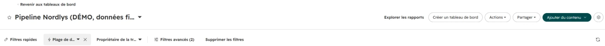
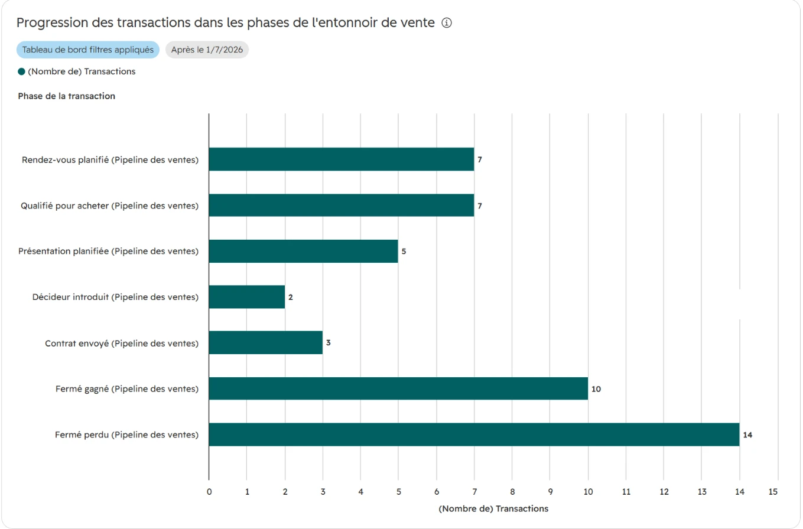
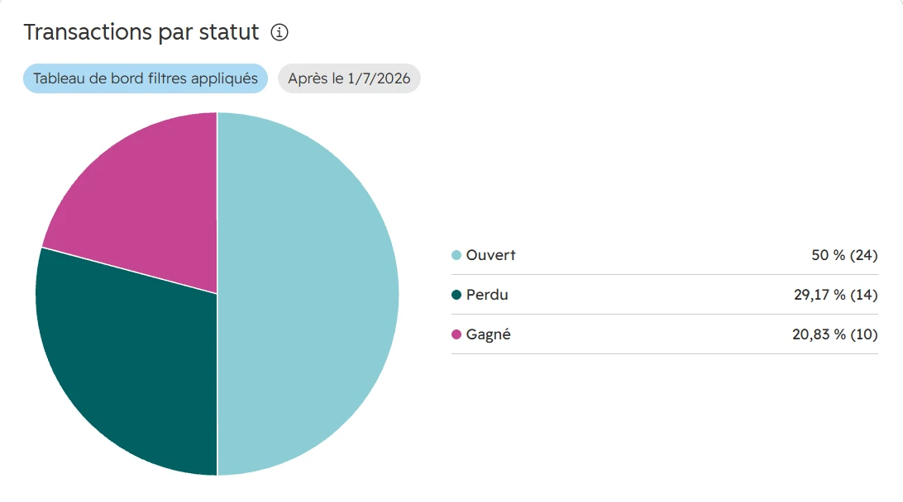

Le problème
Chez Nordlys (fictif), le directeur commercial reçoit chaque lundi un export Excel du CRM. Personne ne sait à quelle étape les ventes se perdent, ni quelles opportunités dorment.
Ce que j'ai fait
Créé 48 transactions de démonstration dans un vrai HubSpot (étapes, dates, motifs de perte, propriétaire), monté le tableau de bord à partir du modèle « Aperçu du pipeline », réglé la période, puis analysé les chiffres.
Le tableau de bord dans HubSpot



Ce que disent les chiffres
42 %taux de gain sur les transactions conclues (10 sur 24)
40 jcycle de vente moyen des transactions gagnées
9 / 24transactions ouvertes depuis plus de 60 jours
8 / 14pertes pour « pas maintenant » (budget, projet reporté)
- L'étape « Décideur introduit » est la plus maigre : 2 transactions, contre 5 en présentation. Premier point à vérifier : souvent, les démos se font sans le décideur.
- Plus d'une perte sur deux n'est pas un vrai « non » : budget ou projet reporté. Ces prospects reviendront si on les relance au bon moment.
- Le pipeline ouvert vieillit : plus d'un tiers des opportunités ouvertes a été créé il y a plus de deux mois. À trier avant de croire le forecast.
Calculs faits sur les 48 transactions de démonstration (données fictives). Aucun montant n'est affiché : le compte de démonstration est en dollars, et les volumes suffisent à la lecture.
Ce que je recommande au directeur commercial
| Action | Pourquoi | Comment le suivre |
|---|---|---|
| Rendre le décideur obligatoire avant la démo | L'étape « Décideur introduit » est la plus maigre | Propriété obligatoire à l'étape, suivie dans l'entonnoir |
| Motif « pas maintenant » = date de relance obligatoire | 8 pertes sur 14 sont reportables | Tâche créée automatiquement à la date choisie |
| Revue des transactions sans activité depuis 60 jours | Pipeline qui vieillit, forecast surestimé | Rapport qualité du lundi (cas Hygiène CRM) |
Mes choix
- Un rapport du modèle HubSpot affichait 48 « transactions conclues » : il filtre sur la date de clôture prévue, transactions ouvertes comprises. Je ne l'ai pas utilisé tel quel : c'est le genre de chiffre faux qui fait perdre confiance dans un tableau de bord.
- Peu d'indicateurs, tous reliés à une décision. Un tableau de bord sert à décider le lundi matin, pas à tout montrer.
- Les données de démonstration sont marquées « [DÉMO Nordlys] » dans HubSpot et se suppriment en une fois.